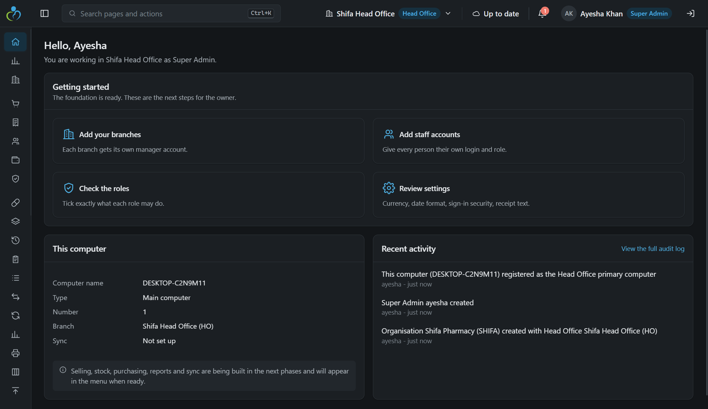
A complete visual walkthrough of every button, navigation screen, and workflow in the Mediescare Offline-First Multi-Branch Pharmacy Management System.
Mediescare is an offline-first pharmacy management and Point of Sale (POS) system built specifically for multi-branch retail and hospital pharmacies. It guarantees continuous counter selling during internet and power outages through decentralized local SQLite databases, synchronized with an encrypted cloud ledger when online.
Every counter and branch maintains its own full local database. Selling, inventory lookups, and receipt printing execute with zero network latency. Changes automatically sync to the Head Office and cloud whenever connectivity is present.
When launched for the first time, Mediescare guides the user through initialization. All standard pharmacy information is pre-filled for effortless onboarding.
Choose between initializing the primary Head Office computer (creates the central database) or joining an existing branch to a Head Office network.
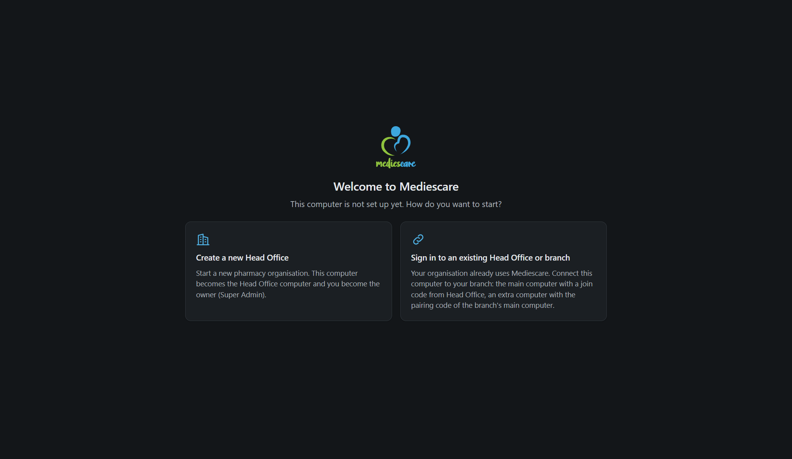
| Button / Control | Function & Behavior |
|---|---|
| Create a new Head Office | Initializes the master pharmacy organization, stores central data, and creates initial Super Admin. |
| Connect a branch computer | Connects this computer to an existing Head Office via a 6-word join code or network discovery. |
Pre-fills Mediescare defaults including Drug Sale Licence number, registered address, phone number, and branch identifiers.
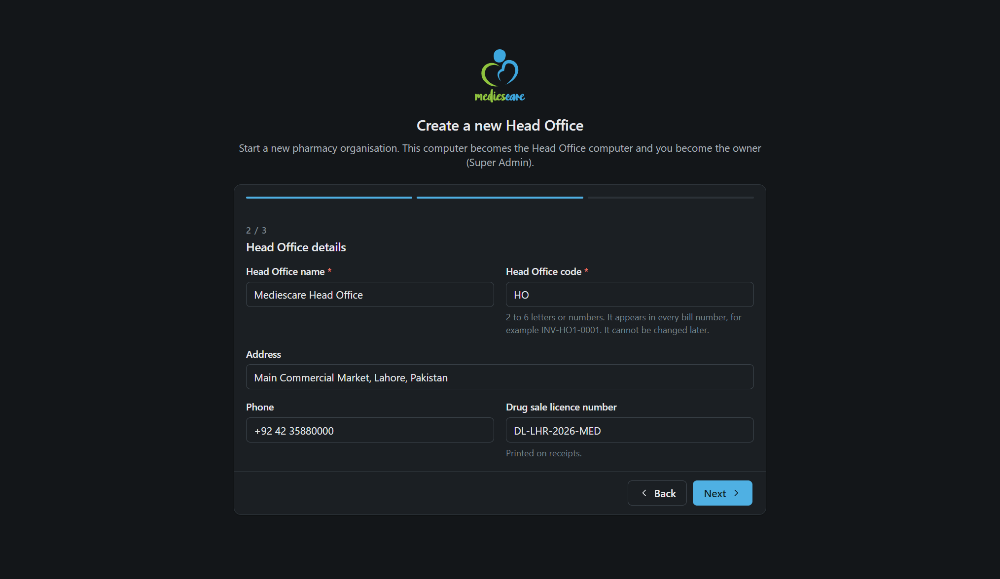
| Button / Control | Function & Behavior |
|---|---|
| Continue / Submit | Validates inputs and moves to administrative password setup. |
| Back | Returns to the previous screen without losing entered information. |
Generates a 24-character cryptographic recovery key shown only once. This key allows an owner to recover an entire pharmacy organization or rebuild a primary computer.
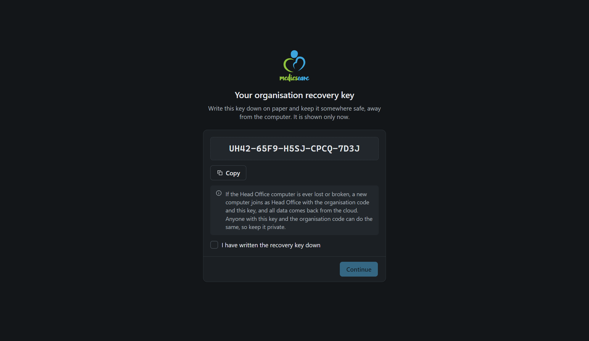
| Button / Control | Function & Behavior |
|---|---|
| Confirmation Checkbox | Must be checked to confirm the recovery key has been safely written down. |
| Continue | Enables once confirmed to open the main app interface. |
The workspace layout provides instant access to all operations through an adaptive top bar and a responsive sidebar navigation.
The top bar stays accessible across all screens and provides vital live status indicators.
| Button / Control | Function & Behavior |
|---|---|
| Branch Chip | Displays active branch name (e.g. Mediescare Head Office). Clicking opens the switch branch dropdown for authorized managers. |
| Cloud & LAN Sync Chip | Real-time sync indicator. Shows Synced (green), Syncing (blue), or Offline (amber). Clicking opens the sync details popover. |
| Search Trigger (Ctrl+K) | Opens the Global Command Palette to search medicines, bills, batches, suppliers, and customers instantly. |
| Notifications Bell | Displays unread system alerts, stock warnings, and expiry alerts with quick links to affected records. |
| User Profile Chip | Displays user name and role badge. Opens profile settings, keyboard shortcuts guide, and Sign Out action. |
| Sidebar Collapse Button | Collapses the side menu into an icon-only minimal bar to maximize screen space for POS and tables. |
Universal omnibar to jump anywhere in the system within seconds. Supports keyboard navigation (Up/Down/Enter/Escape).
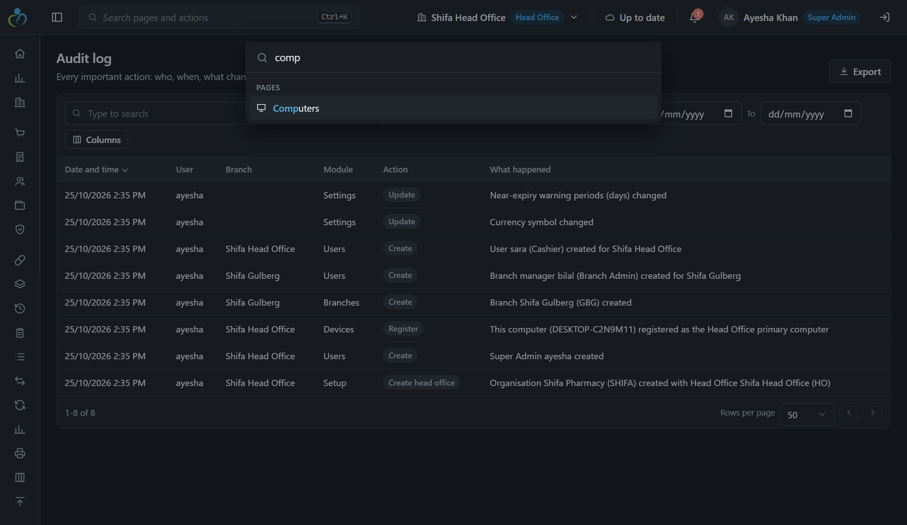
| Button / Control | Function & Behavior |
|---|---|
| Search Input | Type any medicine name, bill document number, supplier, customer, or page title to filter live results. |
| Keyboard Shortcut [Enter] | Immediately opens the highlighted record or navigates to the selected page. |
High-speed counter interface optimized for barcode scanners and keyboard-only operation. Supports multiple units, instant price lookups, discounts, hold bills, and all payment methods.
Every cashier opens a shift before billing to track physical drawer float cash and maintain financial accountability.
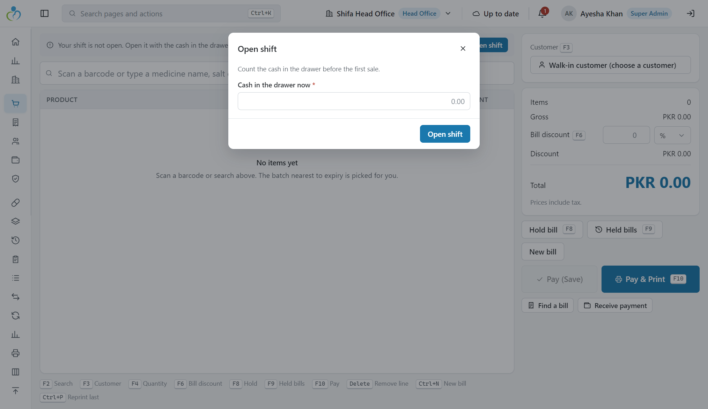
| Button / Control | Function & Behavior |
|---|---|
| Opening Float Input | Enter initial cash in drawer (e.g. Rs 5,000 for change). |
| Open Shift Button | Activates billing and prints an shift-open audit slip. |
Scan barcode or type medicine name. Items are automatically allocated from the earliest expiring batch (FEFO).
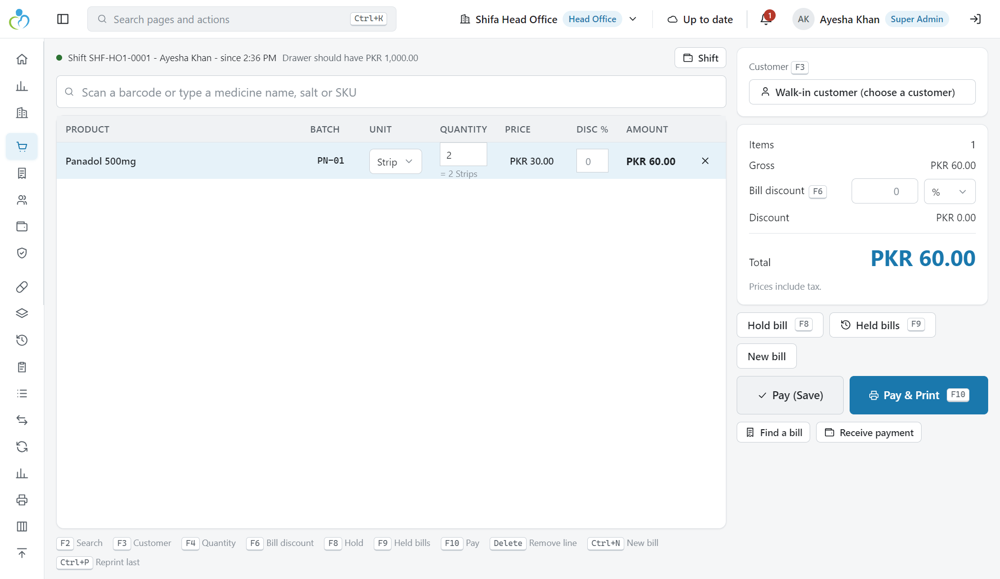
| Button / Control | Function & Behavior |
|---|---|
| Product Search / Scan (Ctrl+Space) | Focuses barcode scan box. Type name or scan barcode to add item instantly. |
| Unit Dropdown (Pack / Strip / Tablet) | Switches dispensing unit. Prices and stock deduct accordingly. |
| Quantity Input | Adjusts quantity sold. Automatically alerts if stock is insufficient. |
| Discount Input (% / Fixed) | Applies line-item discount within cashier allowed threshold. |
| Hold Bill Button | Saves current bill in temporary queue so cashier can attend to the next customer. |
| Resume Bills Button | Restores any previously held bill to the counter. |
| Pay / Tender Button (F12 or Enter) | Opens the payment tender modal. |
Accepts all standard Pakistani and international payment options with automatic change calculation.
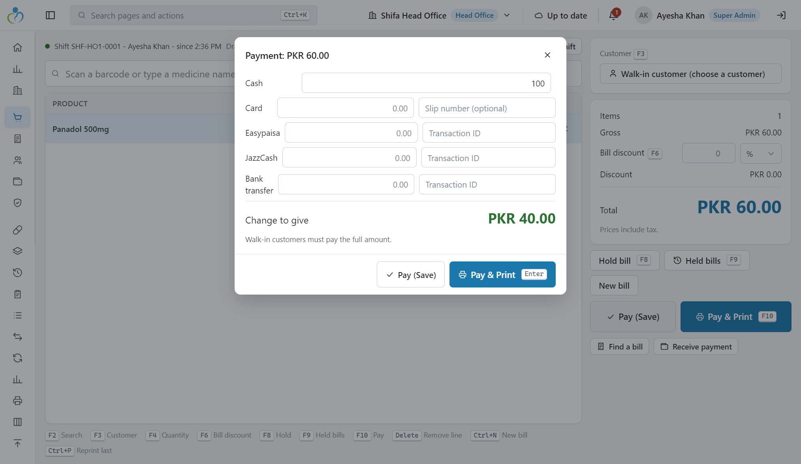
| Button / Control | Function & Behavior |
|---|---|
| Cash (F1) | Standard cash tender. Shows exact change to return. |
| Card (F2) | Bank POS debit/credit card transaction. |
| Easypaisa (F3) | Direct mobile wallet tender. |
| JazzCash (F4) | Direct mobile wallet tender. |
| Credit Account (F5) | Posts to customer ledger if within credit limit. |
| Customer Picker | Selects registered customer for loyalty and credit billing. |
| Complete & Print (Enter) | Finalizes transaction, updates stock, and triggers receipt print. |
Clean 80mm or 58mm thermal receipts with pharmacy header, drug details, batch, expiry, tax summary, and custom footer.
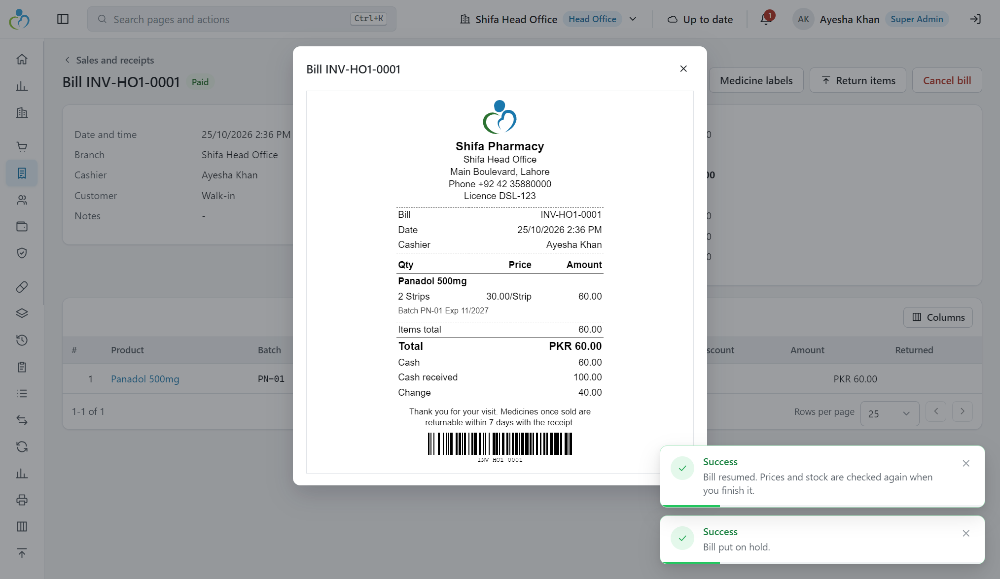
| Button / Control | Function & Behavior |
|---|---|
| Print Button | Sends raw ESC/POS commands directly to thermal printer. |
| New Bill (F2) | Clears screen and prepares counter for the next customer. |
Audit all past transactions, print duplicate receipts, handle returns/refunds, and reconcile daily cash drawers.
Comprehensive ledger of all completed, held, and cancelled sales with filtering by date, payment method, and cashier.
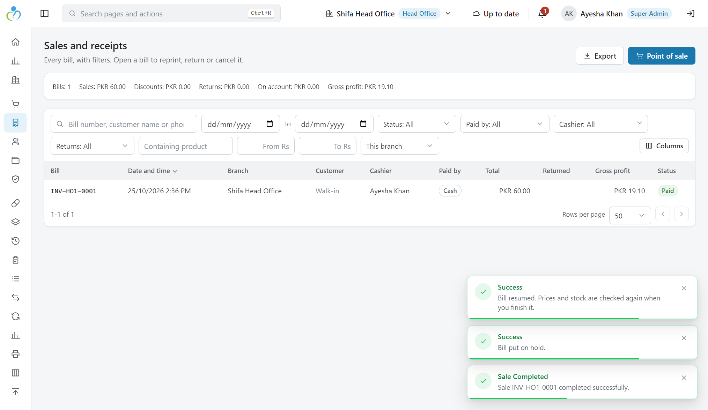
| Button / Control | Function & Behavior |
|---|---|
| View Details Link | Opens full bill with line items, tax, and batch breakdown. |
| Void / Refund Button | Voids sale, restores batches into stock, and records reversal in financial journal. |
| Reprint Receipt | Prints duplicate customer receipt. |
| Export to Excel / CSV | Exports filtered sales ledger for external accounting. |
Mid-shift audit (X-Report) and end-of-day closing (Z-Report) with cash counting breakdown and over/short variance logging.
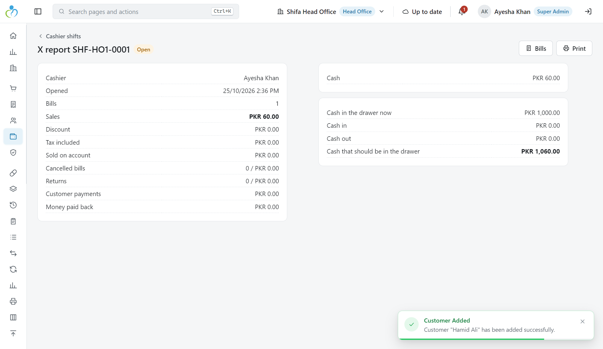
| Button / Control | Function & Behavior |
|---|---|
| Counted Cash Inputs | Enter counts of Rs 5000, 1000, 500, 100, 50, 20, 10 notes. |
| Print Shift Report | Prints thermal summary of cash, digital payments, refunds, and net drawer balance. |
| Close Shift Button | Locks shift and logs any variance with required cashier reason note. |
Full pharmaceutical product catalog with multi-unit packaging, batch-level FEFO tracking, and automatic reorder alerts.
Searchable directory showing stock on hand, pack size, trade price, MRP, and active batches.
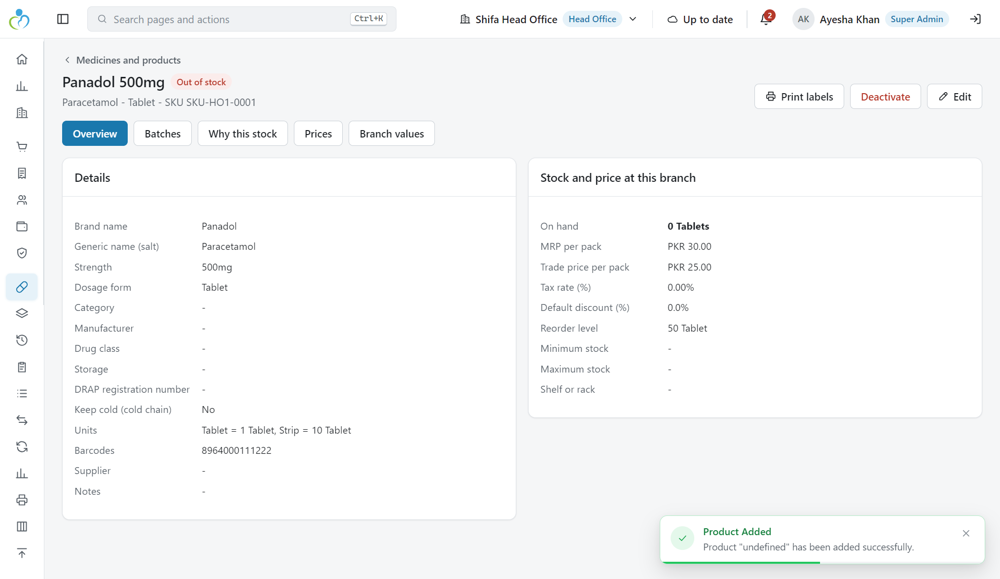
| Button / Control | Function & Behavior |
|---|---|
| Add Product Button | Opens product creation form with generic formulas and unit mappings. |
| Edit Product Button | Updates pricing, barcodes, and categorization. |
| Stock by Batch Tab | Inspects individual batches, expiry dates, and supplier origins. |
| Why This Stock? Tab | Forensic audit trail tracing every single tablet in and out of the branch. |
Comprehensive medical product setup supporting multi-level packaging units.
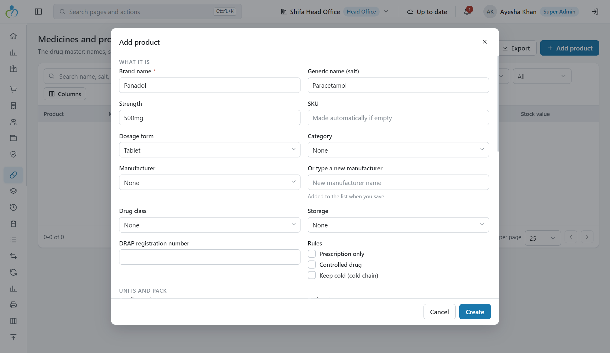
| Button / Control | Function & Behavior |
|---|---|
| Brand Name & Generic Input | Enables searching by chemical formulation and brand. |
| Packaging Structure | Defines how many strips/tablets are in a pack for seamless fraction selling. |
| Controlled Drug Checkbox | Enforces mandatory patient CNIC and doctor prescription recording on sale. |
| Save Button | Validates and saves product to local catalog and syncs across branches. |
Monitors pharmaceutical expiration timelines. Visual color-coded badges highlight expired (red), near-expiry (yellow), and healthy stock (green).
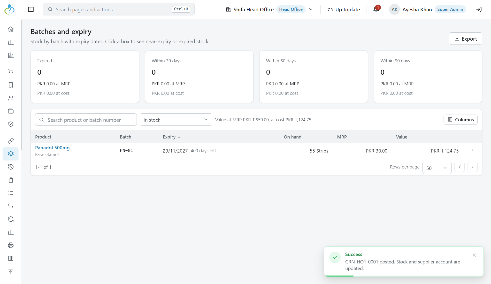
| Button / Control | Function & Behavior |
|---|---|
| Filter by Expiry Range | Filters batches expiring in 30, 60, 90, or 180 days. |
| Export Expiry Report | Generates return list for supplier credit notes before items expire. |
Adjusts inventory count for broken ampoules, damaged packaging, expired medicines, or physical audit corrections.
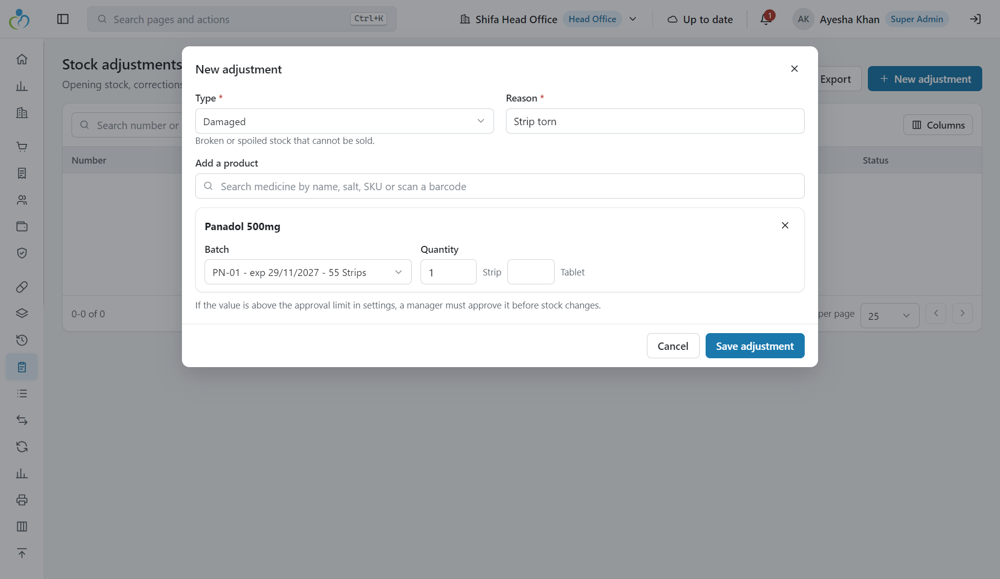
| Button / Control | Function & Behavior |
|---|---|
| Adjustment Reason Dropdown | Selects category: Damaged, Expired, Breakage, Physical Count Variance. |
| Post Adjustment Button | Updates batch balances and logs financial write-off. |
Manage supplier relationships, issue purchase orders, receive incoming stock with batch verification, and settle invoices.
Receives delivery from distributors. Records invoice numbers, batch numbers, expiry dates, bonus units, and distributor discounts.
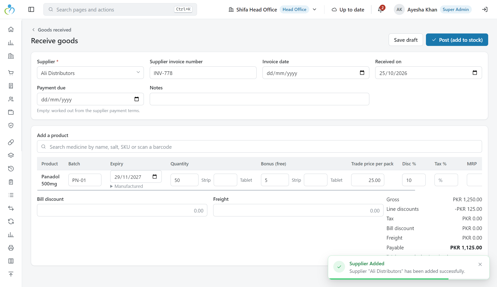
| Button / Control | Function & Behavior |
|---|---|
| Batch No & Expiry Date Inputs | Enters exact manufacturer batch details. |
| Trade Price & MRP Inputs | Calculates pharmacy margin and updates product selling prices. |
| Bonus Units Field | Records free promotional schemes (e.g., 10+1 free) without distorting unit cost. |
| Post GRN Button | Increments inventory stock, creates new batch records, and adds payable bill to supplier ledger. |
Tracks outstanding debts owed to pharmaceutical distributors with due date alerts.
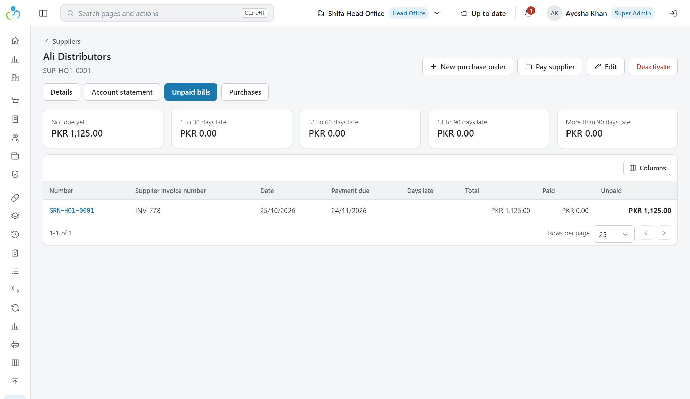
| Button / Control | Function & Behavior |
|---|---|
| Record Payment Button | Applies cash or bank cheque payment against oldest open invoices. |
| Return to Supplier Button | Creates debit note for expired or returned items. |
Maintains statutory legal compliance for scheduled narcotics, sedatives, and prescription-only medications.
Every sale of a controlled medication mandates logging patient identity, prescribing doctor, and clinic details.
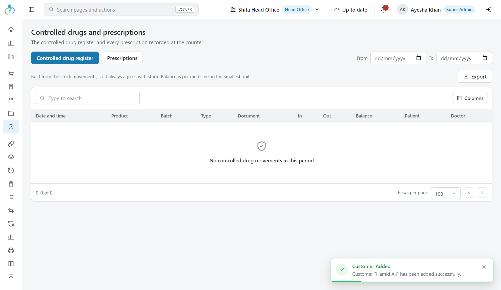
| Button / Control | Function & Behavior |
|---|---|
| Patient Name & CNIC Inputs | Records identity for regulatory inspection. |
| Doctor Name & PMDC Reg No | Verifies medical prescription validity. |
| Print Register Report | Exports official inspection ledger required by health authorities. |
Enables multi-branch operations: dispatch medicines from central warehouse to retail outlets, track transit shortages, and sync in real time.
Head Office creates a transfer packing list. Branch inspects items upon delivery and records any damaged or short units.
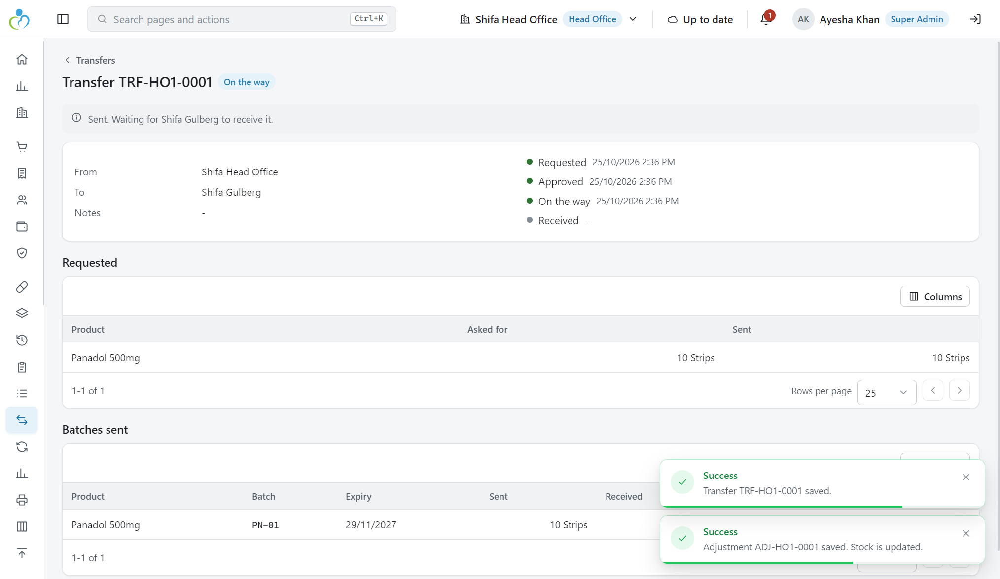
| Button / Control | Function & Behavior |
|---|---|
| Dispatch Transfer | Deducts stock from sender and marks shipment in-transit. |
| Receive & Confirm | Adds items to receiving branch stock and logs any discrepancy notes. |
Pairs secondary counter computers with the branch main PC via local Wi-Fi / Ethernet without requiring internet access.
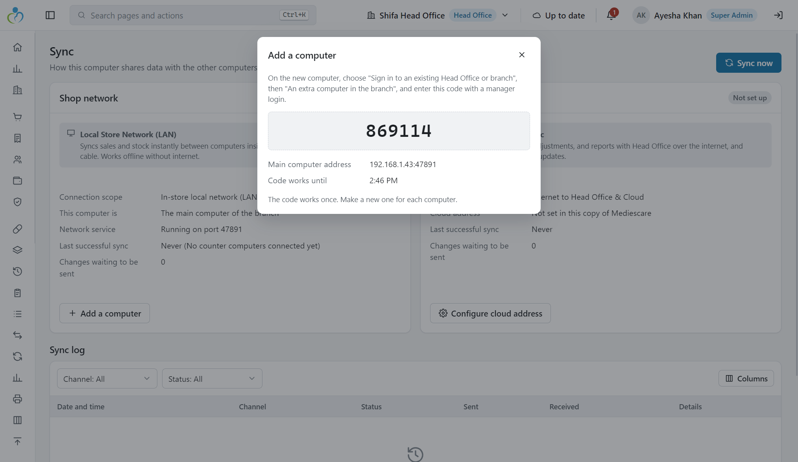
| Button / Control | Function & Behavior |
|---|---|
| 6-Digit Pairing Code | Connects secondary POS terminals in seconds. |
| Refresh Connection | Verifies active counter communication status. |
Business intelligence suite providing live revenue tracking, gross profit analysis, tax summaries, and daily reconciliation.
High-level overview of daily sales volume, gross profit margin, customer count, and low-stock alerts.
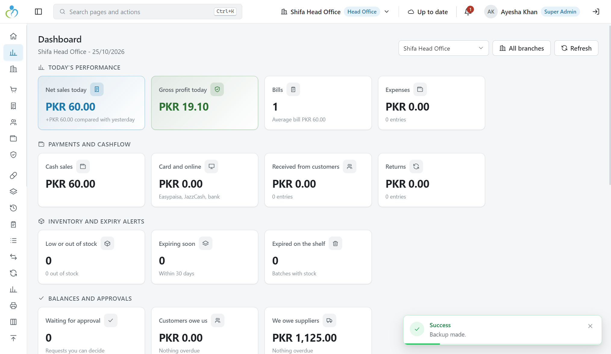
| Button / Control | Function & Behavior |
|---|---|
| Today / Week / Month Toggle | Filters performance metrics over selectable time windows. |
| Branch Selector | Consolidates multi-branch performance for pharmacy owners. |
Itemized sales report with tax breakdowns, cashier totals, payment methods, and profit figures.
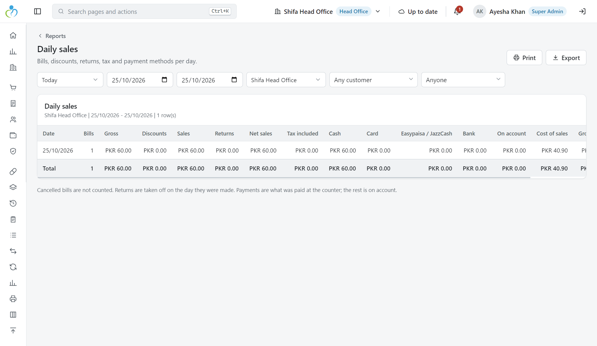
| Button / Control | Function & Behavior |
|---|---|
| Date Range Filter | Selects single day or date range. |
| Print Report Button | Formats report for thermal printer or full-page laser printer. |
| Export to Excel | Downloads structured `.xlsx` spreadsheet. |
Automated double-entry general ledger tracking cash in hand, bank accounts, expenses, and accounts payable.
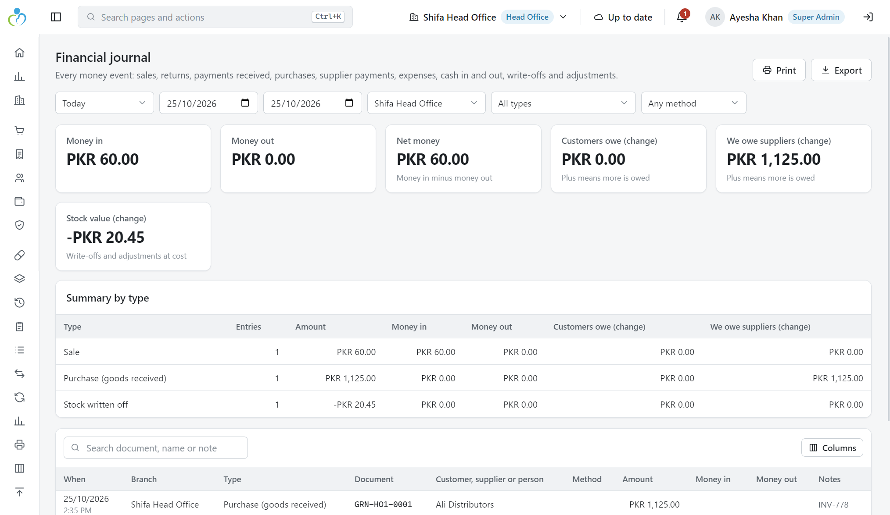
| Button / Control | Function & Behavior |
|---|---|
| Add Expense Button | Records petty cash vouchers, electricity bills, staff lunch, or rent payments. |
Configure staff permissions, manage system settings, pair thermal receipt printers, and automate daily encrypted backups.
Granular security controls ensure cashiers, pharmacists, and managers only access features appropriate for their role.
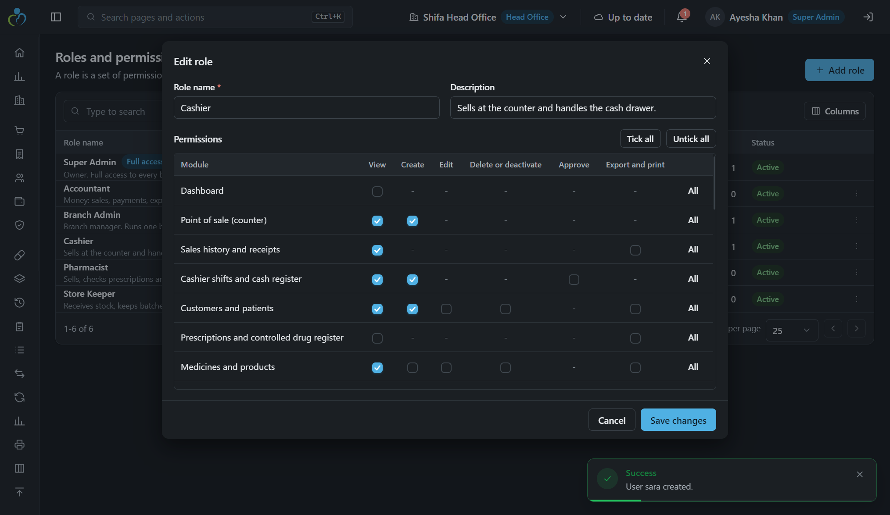
| Button / Control | Function & Behavior |
|---|---|
| Permission Checkboxes | Toggles specific access (e.g., View Purchase Cost, Void Sales, Edit Products, Apply Discounts). |
| Save Role Button | Applies updated permissions immediately across all computers. |
Configure USB, Serial, or LAN receipt printers with customizable bill headers, logos, and cut commands.
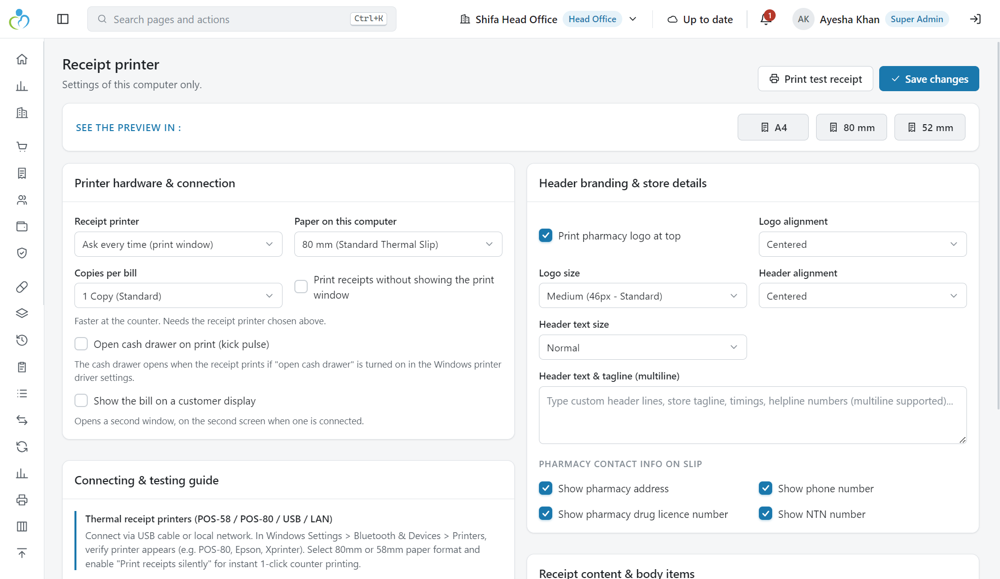
| Button / Control | Function & Behavior |
|---|---|
| Paper Width (80mm / 58mm) | Switches layout width for standard thermal printers. |
| Test Print Button | Sends test diagnostic slip to verify connection and paper alignment. |
Mediescare automatically creates daily encrypted SQLite database snapshots to protect against hardware failure.
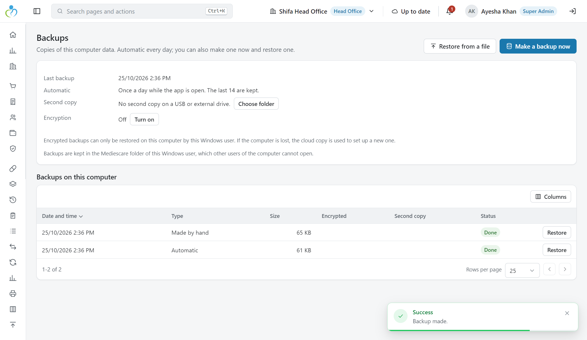
| Button / Control | Function & Behavior |
|---|---|
| Backup Now Button | Creates an instantaneous encrypted backup snapshot. |
| Copy to USB / External Drive | Exports backup offsite for disaster recovery. |
| Restore Backup Button | Restores a selected historical snapshot with a mandatory safety copy created first. |